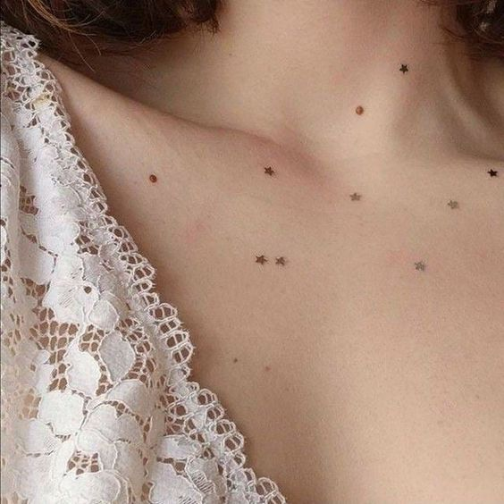

INHERITED TRACES

Taken
11.05.2003
𒊹
I have a star-shaped mole on the front side of my neck that's been there for as long as I can remember.
When I was a kid, I used to imagine it was a little star shining just for me, a secret constellation hidden on my skin.
I loved to tell my friends it was my own personal star, and I'd make up stories about how it guided me through life's adventures.